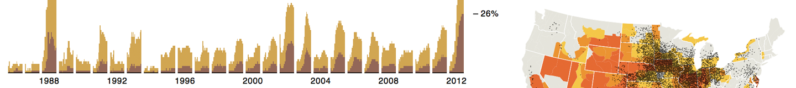
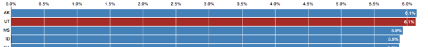
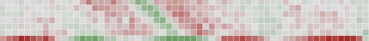
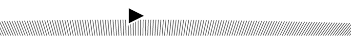
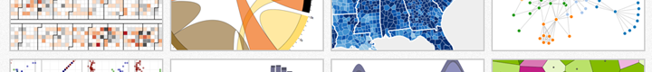

September 6, 2012At the National Conventions, the Words They Used
August 28, 2012At the Republican Convention, the Words Being Used
August 24, 2012Drought during Month
August 24, 2012Drought Extends, Crops Wither
August 10, 2012Drought and Deluge in the Lower 48
June 21, 2012Fisheye Distortion
June 19, 2012D3 + Leaflet
June 10, 2012Zoomable Treemaps
June 1, 2012Line Simplification
May 22, 2012Sankey Diagrams
May 16, 2012Object Constancy
April 8, 2012Nested Selections
March 18, 2012Hive Plots
March 13, 2012The Wealth & Health of Nations
February 27, 2012Towards Reusable Charts
February 5, 2012Thinking with Joins
January 21, 2012Will It Shuffle?
January 19, 2012Path Transitions
January 14, 2012Fisher–Yates Shuffle
January 12, 2012Les Misérables Co-occurrence
January 9, 2012Uber Rides by Neighborhood
July 4, 2011Three Little Circles
Occasionally I stand in front of a room of people and, by flapping my lips or waving my arms, attempt to communicate something of interest. These awkward moments are sometimes captured as moving images and sound for future study.
Slides & Video - May 2, 2012Time Series Visualization with Cubism.js
Slides - March 5, 2012VIZBI: D3 Workshop
Slides & Video - November 16, 2011W3C Conf: Visualizing Data with Web Standards
Slides - October 18, 2011SVG Open: D3 Keynote
Slides & Video - September 21, 2011Trulia Meetup: Use the Force!
As part of my PhD studies at the Stanford Vis Group, I published several papers with my advisor, Jeffrey Heer. Time permitting, I hope to continue academic research.
D3: Data-Driven Documents
IEEE InfoVis 2011
Declarative Language Design for Interactive Visualization
IEEE InfoVis 2010
Crowdsourcing Graphical Perception: Using Mechanical Turk to Assess Visualization Design
ACM CHI 2010, best paper nominee
Protovis: A Graphical Toolkit for Visualization
IEEE InfoVis 2009
My employer, Square, generously sponsors my open-source work. Most of my recent projects are listed on my GitHub profile. The list below also includes some older projects from Stanford and Google. If you want help using any of my libraries, post questions to Stack Overflow with the appropriate tag and I will endeavor to answer them.
D3.js
A JavaScript library for visualizing data and manipulating the document object model.
Cubism.js
A JavaScript library for time series visualization, built on D3.
Cube
A system for time series data collection and analysis, built on MongoDB.
Crossfilter
A JavaScript library for fast multi-dimensional filtering and grouping of data.
Stack.js
A presentation library with intuitive, scroll-based navigation.
Queue.js
Yet another abstraction for asynchronous JavaScript. 554 bytes!
Polymaps
A JavaScript library for image- and vector-tiled maps.
Protovis
A JavaScript library for visualization; superseded by D3.
bl.ocks.org
A viewer for sharing interactive examples via GitHub Gist.
Dependency Tree
A dependency visualization using hierarchical edge bundling.
Polly-B-Gone
A 3D physics platform game.